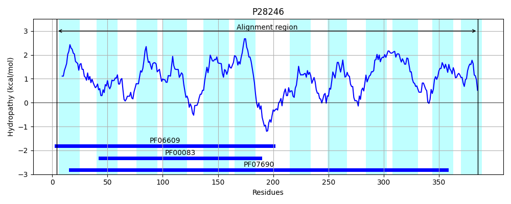
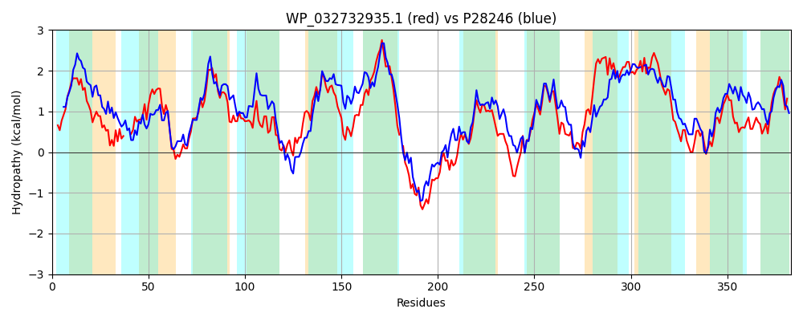

Hit Accession: P28246
Hit TCID: 2.A.1.2.7
Hit Description: gnl|BL_ORD_ID|9635 gnl|TC-DB|P28246|2.A.1.2.7 Bicyclomycin resistance protein (Sulfonamide resistance protein) - Escherichia coli.
Mach Len: 383
e:0.000000
Query TMS Count : 12
Hit TMS Count: 12
TMS-Overlap Score: 9.050000
Predicted Substrates:CHEBI:383703;3,6-diamino-10-methylacridinium chloride, CHEBI:6207;L-cysteine, CHEBI:9337;sulfathiazole, CHEBI:42503;fosfomycin, CHEBI:9474;tetracycline, CHEBI:3091;bicozamycin
BLAST Alignment:
Score: 604 , Bit scores: 237 bits, E-value: 1.0e-74, Alignment length: 383, Percentage identity: 33
Query: 7 RATSGALFILILSGLMAFTSLSTDIYLPAMPMMAAQLH---GDAELTITGFLIGFALAQLVWGPISDRLGRRTPLFIGMVLFIIGSAGCALSTTIDQIVFWRVFQALGACTGPMLARAMVRDLFARTRAAQMLSTLTIVMAIAPIAGPLIGGQMIKFTSWHTIFWLLVVIGALMFIALCWL-PETLPPERRQKGSPLSAFRNYAALVKNRTFMRYTLSLTFFYVAAYAFITGSPDVYIRYYGVAPQHYGWLFAVNIVGVMLMSVVNRRLVQRHALGSLLKAALAVSAIAVVVLAAGVRLHIGGVALIVVSIFLFFSMNGVIAATSTAAALDEAGEYAGSASALIGSLQYGSGIISSLLLAWLHDGTPWTMAWIMAAFTLASLL 385
R S + IL L LS D+YLPA+P+++AQ G ++T++ +++GFAL QL++GP++D GR+ + G ++F + CAL+ TIDQ++ R F L A ++ A++RD++ + ++M+S + +V IAP+ P++GG ++ + SWH IFW+L + L + +L ETLPPERRQ + N+AAL +++ + Y L+ F + ++F++ P VYI VAP+++G+ FA+NIV + +M++ N R V+R ++ ++ L + I + L +G +L VV + F ++++ + A LDE AG+AS+L G+ ++G G I LL+ + W M W +A +S+L
Sbjct: 4 RQHSSFAIVFILGLLAMLMPLSIDMYLPALPVISAQFGVPAGSTQMTLSTYILGFALGQLIYGPMADSFGRKPVVLGGTLVFAAAAVACALANTIDQLIVMRFFHGLAAAAASVVINALMRDIYPKEEFSRMMSFVMLVTTIAPLMAPIVGGWVLVWLSWHYIFWILALAAILASAMIFFLIKETLPPERRQPFHIRTTIGNFAALFRHKRVLSYMLASGFSFAGMFSFLSAGPFVYIEINHVAPENFGYYFALNIVFLFVMTIFNSRFVRRIGALNMFRSGLWIQFIMAAWMVISALLGLGFWSL-VVGVAAFVGCVSMVSSNAMAVILDEFPHMAGTASSLAGTFRFGIGAIVGALLSLATFNSAWPMIWSIAFCATSSIL 385 | Protein Hydropathy Plots: |
|---|
 |  |
Pairwise Alignment-Hydropathy Plot:
|
|---|
|  |